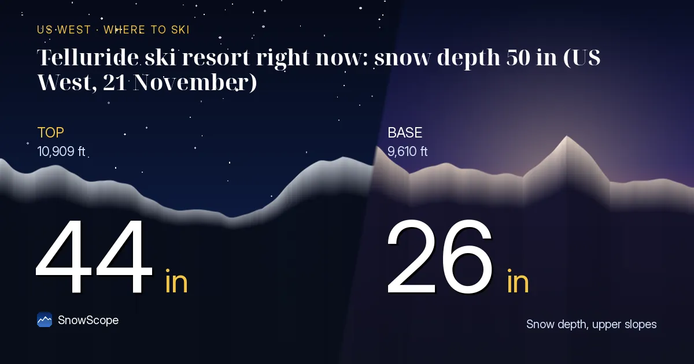

Telluride ski resort right now: snow depth 50 in (US West, 21 November)
Telluride ski resort right now – US West snow report, 21 November. The biggest snow store in the US West today is at Brian Head Resort: about 54 in (138 cm) on its upper slopes, by our model. Telluride holds 50 in (127 cm) and Mount Rose Ski Tahoe 48 in (121 cm). Today 435,230 sq mi (1,127,240 km²) of ground in the US West is covered by snow, our model says, and 183 of 193 resorts have snow on their upper slopes. For the rivers downstream, how long the snow stays matters as much as how much falls.
See the live snow forecast for Telluride in the SnowScope appSnow depth, powder alerts and the 3D map, free.
Normal, early or late?
Brian Head Resort has a good start to its snow store: 40 in (101 cm) at 10,259 ft (3,127 m), deeper than on this date in 45 of the past 46 winters (usual: 4 in (11 cm)).
At 10,620 ft (3,237 m) on Telluride, today's 23 in (58 cm) is more than this date brought in 31 of the past 46 winters (usual: 12 in (30 cm)): a good amount of water is already stored in the snow.
Mount Rose Ski Tahoe has a good start to its snow store: 39 in (98 cm) at 8,573 ft (2,613 m), deeper than on this date in 45 of the past 46 winters (usual: 4 in (10 cm)).
| Resort | Snow depth | New snow, 72 h | Coming, next days | Top |
|---|---|---|---|---|
| Brian Head Resort | 54 in (138 cm) | 7 in (17 cm) | 0 in (0 cm) | 10,909 ft (3,325 m) |
| Telluride | 50 in (127 cm) | 5 in (12 cm) | 4 in (10 cm) | 12,507 ft (3,812 m) |
| Mount Rose Ski Tahoe | 48 in (121 cm) | 19 in (47 cm) | 2 in (4 cm) | 9,567 ft (2,916 m) |
| Palisades Tahoe Alpine Meadows | 46 in (116 cm) | 20 in (51 cm) | 2 in (6 cm) | 8,494 ft (2,589 m) |
| Bear Valley | 44 in (111 cm) | 24 in (60 cm) | 2 in (4 cm) | 8,484 ft (2,586 m) |

Against past winters
At about 10,259 ft (3,127 m), Brian Head Resort has 40 in (101 cm) today; a normal 21 November has 4 in (11 cm) there.
That is more than in 45 of the 46 past winters on this date.
In past winters the best snow at Brian Head Resort usually came early March / mid-March.
An early lead like this matters most for the lower and middle runs, which usually wait until December for this much snow.
Height by height at Brian Head Resort: 9,610 ft (2,929 m) 26 in (67 cm) on the ground, 0 in (1 cm) more in the next 7 days; 10,259 ft (3,127 m) 37 in (94 cm) on the ground, 0 in (1 cm) more in the next 7 days; 10,909 ft (3,325 m) 44 in (113 cm) on the ground, 0 in (1 cm) more in the next 7 days.
Today's snow store
Since 19 November the snow cover went up from 361,353 sq mi (935,900 km²) to 435,230 sq mi (1,127,240 km²); on 24 November the forecast gives 384,260 sq mi (995,230 km²).
Our model splits Brian Head Resort into three heights: 44 in (113 cm) at the top (10,909 ft / 3,325 m), 37 in (94 cm) at mid-mountain (10,259 ft / 3,127 m), 26 in (67 cm) at the base (9,610 ft / 2,929 m).
The next days in the forecast
Until 24 November, the forecast adds 4 in (10 cm) at Telluride, 2 in (6 cm) at Palisades Tahoe Alpine Meadows and 2 in (4 cm) at Mount Rose Ski Tahoe; amounts several days out can still change.
At Brian Head Resort the freezing level is 5,282 ft (1,610 m) to 8,727 ft (2,660 m) on 22 November, below the base: new precipitation would add to the snowpack, not run off.
Forecasts a few days ahead can change: look at the map again the day before you travel.
Measured snow
The Leavitt Lake station (9,600 ft / 2,926 m) reported a snow depth of 51 in (130 cm) on 19 November. The Lost Lakes station (8,638 ft / 2,633 m) reported a snow depth of 46 in (117 cm) on 19 November, 10 in (25 cm) of it from the last 24 hours. Measured, not modelled: the Independence Lake station (8,340 ft / 2,542 m) recorded 42 in (107 cm) of snow on the ground on 19 November, with 9 in (23 cm) of new snow in 24 hours.
A note on measurement: resort values are modelled for the upper slopes, station values are measured at one place on the date given, and both carry some uncertainty.
Tips for skiers
- Snow on the map does not mean a resort is open: check lifts and opening dates on the resort's website.
- Early-season snow is thin. Stay on open, groomed pistes: rocks and grass can hide just under the surface.
- A rule of thumb that is rarely wrong: high and north-facing keeps snow, south-facing loses it first.
- Before you ski off-piste or go touring, read the official avalanche bulletin (links below).
- Get a powder alert in the SnowScope app to know when Brian Head Resort gets fresh snow.
About these numbers
Resort snow depths are the deepest snow on the resort's upper slopes from the SnowScope snow model (about 1 km, run of 21 November); they are estimates for an area, not a measurement at one point. Station values are measurements on the date shown. Forecasts can change. Always read the official avalanche bulletin before going off-piste.
Official avalanche bulletins: Colorado Avalanche Information Center · avalanche.org (US national portal)
Cite this report
For research, teaching or the press: the numbers and charts are free to reuse under CC BY 4.0 with this citation.
SnowScope (2026), Telluride ski resort right now: snow depth 50 in (US West, 21 November), https://snowscope.app/blog/en/2026/11/us-west-telluride-snow-depth-today-21-november-2026.html, accessed 2026-11-21
SnowScope (Atlas Labs). (2026, November 21). Telluride ski resort right now: snow depth 50 in (US West, 21 November). SnowScope snow reports. https://snowscope.app/blog/en/2026/11/us-west-telluride-snow-depth-today-21-november-2026.html
BibTeX
@misc{snowscope2026uswesttelluridesnowdepth,
author = {{SnowScope (Atlas Labs)}},
title = {Telluride ski resort right now: snow depth 50 in (US West, 21 November)},
year = {2026},
month = nov,
howpublished = {\url{https://snowscope.app/blog/en/2026/11/us-west-telluride-snow-depth-today-21-november-2026.html}},
note = {Published 2026-11-22 10:03 UTC; accessed 2026-11-21}
}· CC BY 4.0 · Methods, data and tools →
Telluride: snow and temperature by height, this winter vs last (tools) →
Follow Telluride
Free: a message when fresh snow is coming, and the forecast every morning.
More snow reports

The National Weather Service expects 10 to 20 inches in the Wasatch from Thursday to Saturday. Where Utah's snowpack stands against past winters, why Utah snow is lighter, and when to ski.

What the measured snow gauges say about the North Lake Tahoe storm, why the first snow is heavy and wet, and how Sugar Bowl, Northstar and Diamond Peak compare with 46 winters.

About 28 inches of new snow at Mammoth and 26 inches at June Mountain on 18-19 November. What the storm is, how it ranks against past winters, and the best days to go.